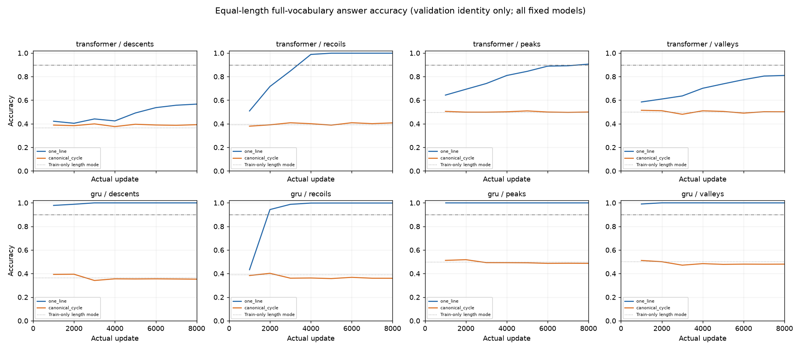
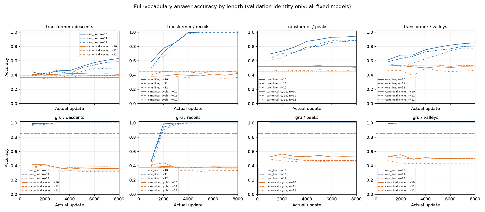
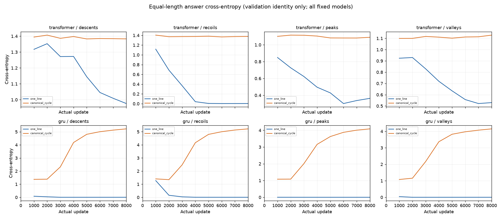
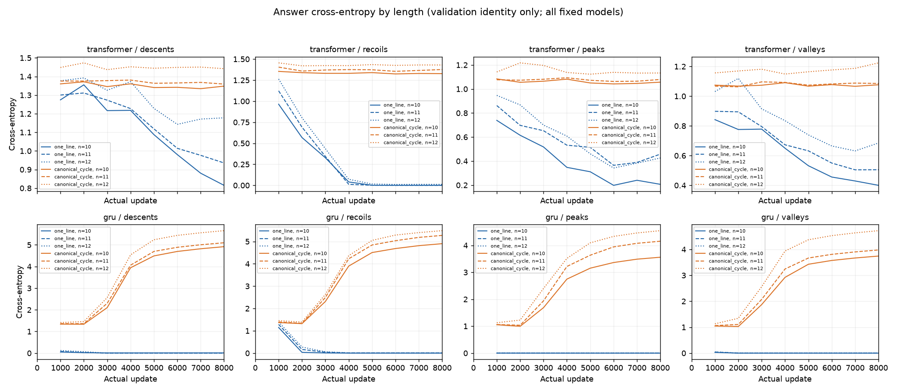
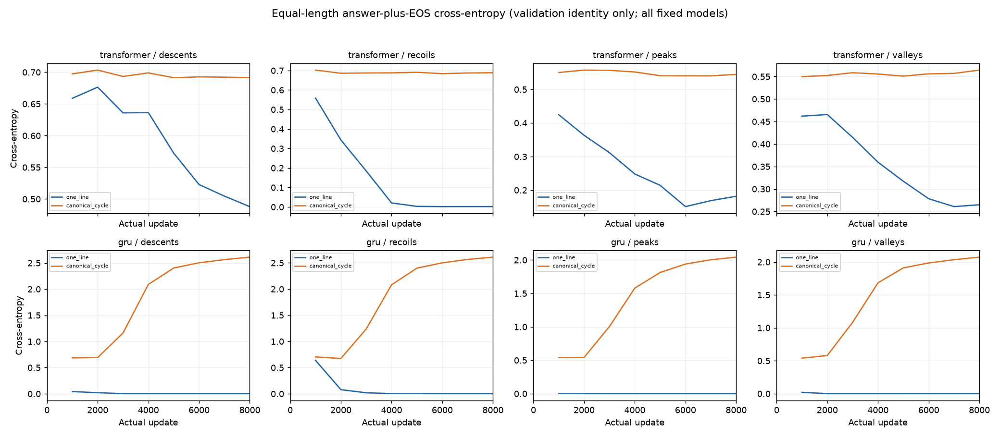
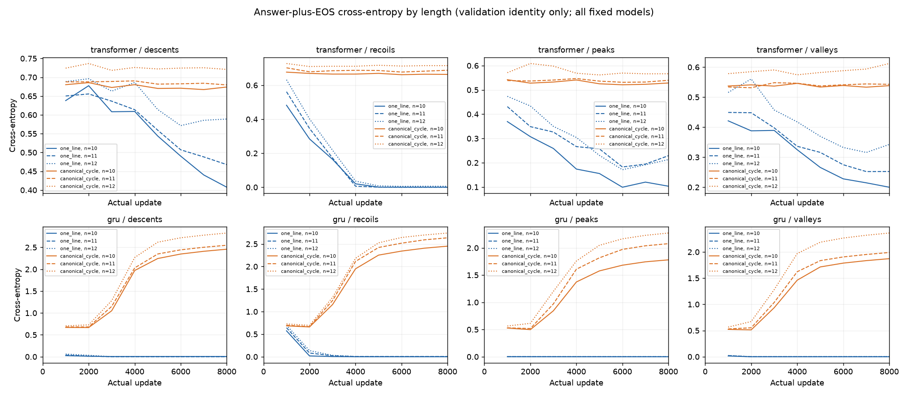
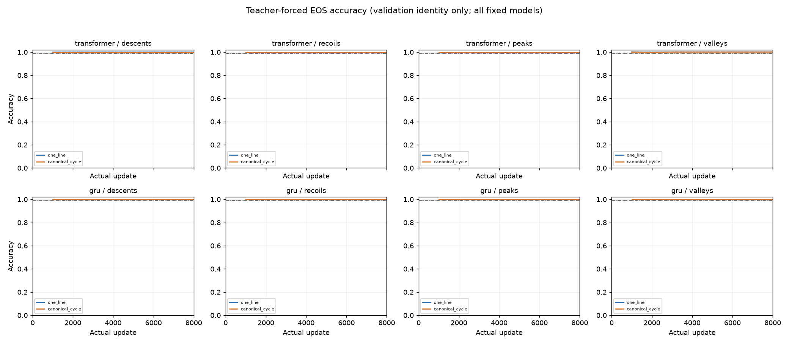
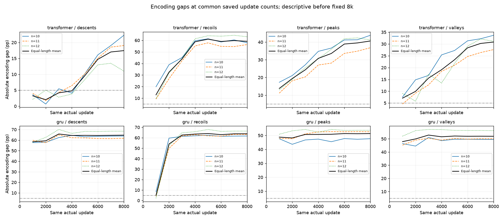

All 16 endpoints · Every saved length · All 8 encoding pairs · Learning curves · Train-only baseline · Audit
PermWorld bounded learning development: validation-only report
Generated UTC: 2026-10-10T16:59:28.780420+00:00
Exploratory development; one preset, one new world, one initializer per architecture.
Complete fixed-8k models with complete validation: 16/16.
Models with all 8000 updates, regardless of missing final validation: 16/16.
Overall 16-model learning acceptance: FAIL / INCOMPLETE
Architecture joint acceptance: transformer=FAIL / INCOMPLETE, gru=FAIL / INCOMPLETE
Only the fixed 8000-update endpoint can qualify. Partial 2k/4k/actual-budget-stop results remain visible; earlier maxima do not replace the endpoint.
Each architecture requires all four tasks, both encodings, and all paired encoding gates. A partial subset is not a completed development unit.
Primary accuracy is the full-vocabulary answer argmax on identity validation; numeric accuracy is additional description. EOS is teacher-forced at the true answer token, not free generation.
The training-length majority baseline is fixed from identity training labels only, with the smallest numeric label breaking ties, then scored on validation.
All three lengths have fixed equal weights of 1/3. Paired encoding comparisons require equal actual update counts; unequal-budget partial runs do not estimate an encoding effect.
Loss curves show all saved validation points and last-update training loss in CSV; no best-checkpoint selection or additional loss threshold.
Fixed learning thresholds: {"checkpoints": "Only the completed fixed8k endpoint qualifies. Partial2k/4k checkpoints never substitute.", "joint_acceptance": "Every four tasks and both encodings within an architecture pass; report architectures separately and overall16 acceptance.", "losses": "Validation answer CE and combined answer+EOS CE fully reported; no extra loss threshold.", "paired_encoding_accuracy_gap_max_pp": 5.0, "paired_encoding_per_length_accuracy_gap_max_pp": 5.0, "per_length_accuracy_min": 0.85, "per_model_eos_accuracy_min": 0.99, "per_model_equal_length_accuracy_min": 0.9, "per_model_gain_over_training_length_majority_min_pp": 20.0, "primary": "Identity validation full-vocabulary answer accuracy."}
Model endpoints (accuracy/baseline/EOS in %, gaps in percentage points):
learningdev001_transformer_one_line_descents: step=8000, answer=56.67%, min-length=48.34%, baseline=36.62%, gain=20.052pp, EOS=100.00%, answer-CE=0.976, combined-CE=0.488, gate=FAIL, failures=equal_length_accuracy_below_fixed_gate;minimum_length_accuracy_below_fixed_gate.
learningdev001_transformer_canonical_cycle_descents: step=8000, answer=39.23%, min-length=37.30%, baseline=36.62%, gain=2.604pp, EOS=100.00%, answer-CE=1.383, combined-CE=0.692, gate=FAIL, failures=equal_length_accuracy_below_fixed_gate;gain_over_length_baseline_pp_below_fixed_gate;minimum_length_accuracy_below_fixed_gate.
learningdev001_transformer_one_line_recoils: step=8000, answer=99.87%, min-length=99.61%, baseline=39.16%, gain=60.710pp, EOS=100.00%, answer-CE=0.004, combined-CE=0.002, gate=PASS, failures=none.
learningdev001_transformer_canonical_cycle_recoils: step=8000, answer=40.76%, min-length=36.52%, baseline=39.16%, gain=1.595pp, EOS=100.00%, answer-CE=1.378, combined-CE=0.689, gate=FAIL, failures=equal_length_accuracy_below_fixed_gate;gain_over_length_baseline_pp_below_fixed_gate;minimum_length_accuracy_below_fixed_gate.
learningdev001_transformer_one_line_peaks: step=8000, answer=90.59%, min-length=88.48%, baseline=49.80%, gain=40.788pp, EOS=100.00%, answer-CE=0.363, combined-CE=0.182, gate=PASS, failures=none.
learningdev001_transformer_canonical_cycle_peaks: step=8000, answer=49.97%, min-length=47.75%, baseline=49.80%, gain=0.163pp, EOS=100.00%, answer-CE=1.090, combined-CE=0.545, gate=FAIL, failures=equal_length_accuracy_below_fixed_gate;gain_over_length_baseline_pp_below_fixed_gate;minimum_length_accuracy_below_fixed_gate.
learningdev001_transformer_one_line_valleys: step=8000, answer=80.99%, min-length=77.44%, baseline=50.16%, gain=30.827pp, EOS=100.00%, answer-CE=0.530, combined-CE=0.265, gate=FAIL, failures=equal_length_accuracy_below_fixed_gate;minimum_length_accuracy_below_fixed_gate.
learningdev001_transformer_canonical_cycle_valleys: step=8000, answer=50.16%, min-length=46.29%, baseline=50.16%, gain=0.000pp, EOS=100.00%, answer-CE=1.129, combined-CE=0.564, gate=FAIL, failures=equal_length_accuracy_below_fixed_gate;gain_over_length_baseline_pp_below_fixed_gate;minimum_length_accuracy_below_fixed_gate.
learningdev001_gru_one_line_descents: step=8000, answer=99.97%, min-length=99.90%, baseline=36.62%, gain=63.346pp, EOS=99.97%, answer-CE=0.003, combined-CE=0.002, gate=PASS, failures=none.
learningdev001_gru_canonical_cycle_descents: step=8000, answer=35.25%, min-length=31.54%, baseline=36.62%, gain=-1.367pp, EOS=100.00%, answer-CE=5.224, combined-CE=2.612, gate=FAIL, failures=equal_length_accuracy_below_fixed_gate;gain_over_length_baseline_pp_below_fixed_gate;minimum_length_accuracy_below_fixed_gate.
learningdev001_gru_one_line_recoils: step=8000, answer=99.84%, min-length=99.71%, baseline=39.16%, gain=60.677pp, EOS=100.00%, answer-CE=0.005, combined-CE=0.002, gate=PASS, failures=none.
learningdev001_gru_canonical_cycle_recoils: step=8000, answer=36.04%, min-length=33.30%, baseline=39.16%, gain=-3.125pp, EOS=100.00%, answer-CE=5.220, combined-CE=2.610, gate=FAIL, failures=equal_length_accuracy_below_fixed_gate;gain_over_length_baseline_pp_below_fixed_gate;minimum_length_accuracy_below_fixed_gate.
learningdev001_gru_one_line_peaks: step=8000, answer=100.00%, min-length=100.00%, baseline=49.80%, gain=50.195pp, EOS=100.00%, answer-CE=0.000, combined-CE=0.000, gate=PASS, failures=none.
learningdev001_gru_canonical_cycle_peaks: step=8000, answer=48.67%, min-length=46.29%, baseline=49.80%, gain=-1.139pp, EOS=100.00%, answer-CE=4.086, combined-CE=2.043, gate=FAIL, failures=equal_length_accuracy_below_fixed_gate;gain_over_length_baseline_pp_below_fixed_gate;minimum_length_accuracy_below_fixed_gate.
learningdev001_gru_one_line_valleys: step=8000, answer=99.97%, min-length=99.90%, baseline=50.16%, gain=49.805pp, EOS=100.00%, answer-CE=0.001, combined-CE=0.000, gate=PASS, failures=none.
learningdev001_gru_canonical_cycle_valleys: step=8000, answer=48.01%, min-length=43.65%, baseline=50.16%, gain=-2.148pp, EOS=100.00%, answer-CE=4.148, combined-CE=2.074, gate=FAIL, failures=equal_length_accuracy_below_fixed_gate;gain_over_length_baseline_pp_below_fixed_gate;minimum_length_accuracy_below_fixed_gate.
Paired encoding gates (fixed equal-budget 8k only):
transformer/descents: mean-gap=17.448pp, max-length-gap=22.266pp, gate=FAIL; mean_encoding_gap_above_fixed_gate;length_encoding_gap_above_fixed_gate;paired_model_learning_gate_failed.
transformer/recoils: mean-gap=59.115pp, max-length-gap=63.086pp, gate=FAIL; mean_encoding_gap_above_fixed_gate;length_encoding_gap_above_fixed_gate;paired_model_learning_gate_failed.
transformer/peaks: mean-gap=40.625pp, max-length-gap=43.848pp, gate=FAIL; mean_encoding_gap_above_fixed_gate;length_encoding_gap_above_fixed_gate;paired_model_learning_gate_failed.
transformer/valleys: mean-gap=30.827pp, max-length-gap=33.691pp, gate=FAIL; mean_encoding_gap_above_fixed_gate;length_encoding_gap_above_fixed_gate;paired_model_learning_gate_failed.
gru/descents: mean-gap=64.714pp, max-length-gap=68.457pp, gate=FAIL; mean_encoding_gap_above_fixed_gate;length_encoding_gap_above_fixed_gate;paired_model_learning_gate_failed.
gru/recoils: mean-gap=63.802pp, max-length-gap=66.406pp, gate=FAIL; mean_encoding_gap_above_fixed_gate;length_encoding_gap_above_fixed_gate;paired_model_learning_gate_failed.
gru/peaks: mean-gap=51.335pp, max-length-gap=53.711pp, gate=FAIL; mean_encoding_gap_above_fixed_gate;length_encoding_gap_above_fixed_gate;paired_model_learning_gate_failed.
gru/valleys: mean-gap=51.953pp, max-length-gap=56.250pp, gate=FAIL; mean_encoding_gap_above_fixed_gate;length_encoding_gap_above_fixed_gate;paired_model_learning_gate_failed.
Budget and scope:
{
"actual_anchor_exposures": 8192000,
"actual_supervised_answer_plus_eos_tokens": 16384000,
"actual_updates": 128000,
"additional_budget_authorized": false,
"architecture_parameters": {
"gru": 1660416,
"transformer": 3240448
},
"budget_deadline_epoch": 1791657057.4915054,
"budget_limit_seconds": 7200,
"budget_reset": false,
"finalization_reserve_seconds": 30,
"fixed_manifest_models": 16,
"fixed_steps_per_model": 8000,
"interval_union_scope": "Saved source invocation metadata only; excludes engineering, gaps, and unsaved crashed invocations.",
"orchestrator_active_wall_seconds": 1703.4707593917847,
"orchestrator_wall_scope": "From persistent GPU-budget start through orchestrator finish, including engineering and validation/save overhead; not measured GPU utilization.",
"source_invocation_interval_union_seconds": 1578.1891405582428,
"sum_model_process_wall_seconds": 1578.189120962983,
"sum_process_wall_scope": "Per-model cumulative process wall time; overlapping execution is counted repeatedly. This is not GPU utilization hours or project elapsed time.",
"update_cutoff_epoch": 1791657027.4915054
}
Summed model process wall time is not actual GPU hours or project elapsed time. The persistent orchestrator wall-clock budget includes engineering, validation, and save overhead; GPU utilization was not measured.
One exploratory data world and one initializer per architecture do not provide independent world replication, statistical power, confirmation p-values, or an equivalence claim.
Transformer and GRU have different parameter counts and different initial parameters. Within each architecture the two encodings and four tasks share an exact saved initializer.
The one development preset changes six training factors together. Improved learning cannot be attributed to a single factor or to mathematical geometry.
No test arrays, CKA, Delta, hidden activations, probabilities, or checkpoint tensors were read. Old artifacts and F17 were not modified; no additional candidate or training was started by this reporter.
Passing supports only readiness for an independently frozen learning/geometry verification. Failing identifies the learning/budget gate; no task, length, or checkpoint is silently dropped.
The budget may leave a partial manifest due to its fixed job order. Such an outcome is incomplete, rather than evidence for a favorable architecture or encoding.
Metadata audit errors: {}
Independent-verification proposal: not generated because the complete 16-model unit did not qualify






